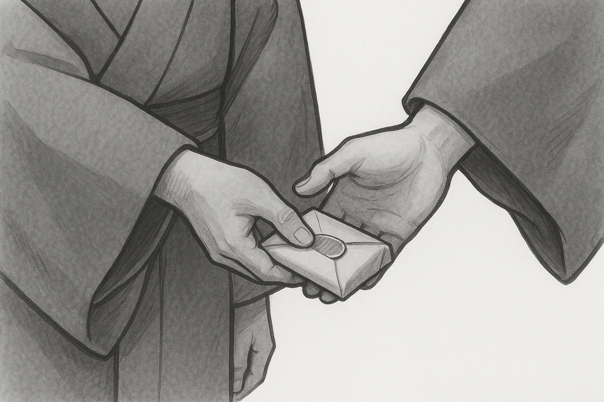

Ⅰ 幕府の改革
商業の力で立て直す ── 田沼の政治
1772
老中となった
⑨
田沼意次
が、商業を活発にして財政を立て直そうとした。
1
⑩
株仲間
を認め、
商売を独占
させる代わりに
税を取った
。
2
蝦夷地の開拓を計画。大商人と結びつき、
わいろ
が横行して政治が乱れた。
3
天明の大ききん
がおこり、百姓一揆や
打ちこわし
が多発した。
★ ここがポイント
田沼＝
商人の組合を認めて税を取る
（＋わいろ）。のちの水野忠邦は
その組合を解散
させる＝正反対。「認める↔解散」で対で覚える。

第16章 江戸時代（３）
SEED EDUCATION